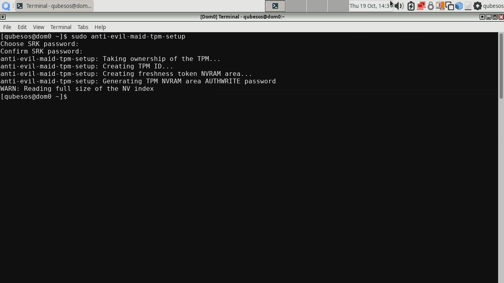
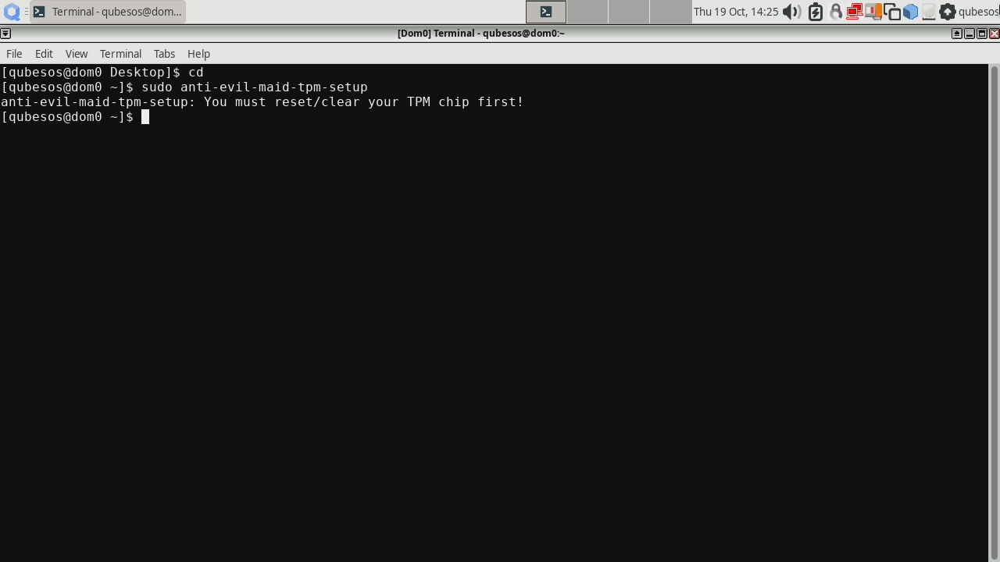
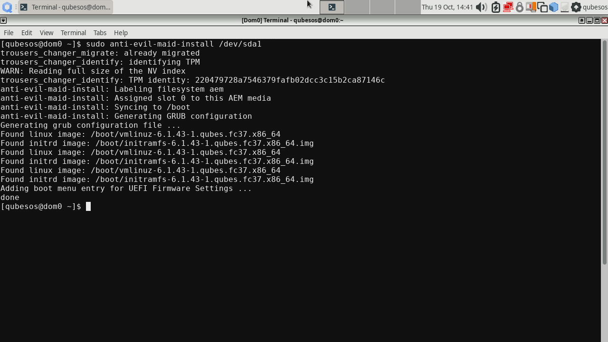
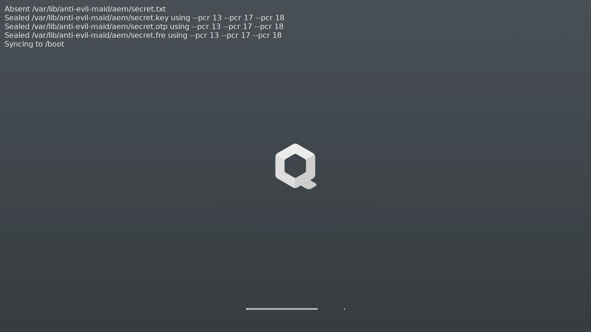

Installing TrenchBoot AEM in Qubes OS¶
This document shows how to install Anti Evil Maid from packages produced by 3mdeb as part of TrenchBoot as Anti Evil Maid project. If you wish to build the components yourself, please refer to documentation for developers instead.
Disclaimer¶
As of now, only legacy boot is supported. These instructions WON'T WORK under UEFI. You have been warned.
Installation¶
To install, you have to first add a new repository and import a public part of a key that was used to sign RPM packages.
Adding AEM repository¶
To add a new repository, create in dom0 as root /etc/yum.repos.d/aem.repo
with the following content:
[aem]
name = Anti Evil Maid based on TrenchBoot
baseurl = https://dl.3mdeb.com/rpm/QubesOS/r4.2/current/dom0/fc37
gpgcheck = 1
gpgkey = https://dl.3mdeb.com/rpm/QubesOS/r4.2/current/dom0/fc37/RPM-GPG-KEY-tb-aem
enabled = 1
The key specified in the file must be downloaded and imported to RPM:
qvm-run --pass-io sys-net \
'curl -L https://dl.3mdeb.com/rpm/QubesOS/r4.2/current/dom0/fc37/RPM-GPG-KEY-tb-aem' \
> RPM-GPG-KEY-tb-aem
sudo rpm --import RPM-GPG-KEY-tb-aem
Now it should be possible to download and install packages from AEM repository.
Installing prerequisite packages¶
As some of the packages are also available in standard QubesOS repositories,
potentially in newer versions, those must be temporarily disabled during
invocation of qubes-dom0-update, as shown in the following commands. If any
of the packages that are part of AEM are updated in standard repos, you will
have to choose between using new versions or having working AEM, at least until
new AEM release is published or the code gets merged upstream. If you decide to
restore AEM after an update broke it, you will have to repeat the installation
of overwritten package with --action=reinstall added to qubes-dom0-update,
if it wasn’t present before.
Start by installing prerequisite packages. Those are not part of newly added
repository, but qubes-dom0-current-testing:
sudo qubes-dom0-update --enablerepo=qubes-dom0-current-testing \
oathtool \
openssl \
qrencode \
tpm-extra \
trousers-changer \
tpm-tools
Next set of new packages comes from AEM repository, to avoid conflicts other repositories are disabled for this call:
sudo qubes-dom0-update --disablerepo="*" --enablerepo=aem \
grub2-tools-extra \
secure-kernel-loader
This is followed by reinstalling additional packages. A reinstall is required because currently installed version is equal (or it may be higher in the future) than those provided by AEM.
sudo qubes-dom0-update --disablerepo="*" --enablerepo=aem --action=reinstall \
python3-xen \
xen \
xen-hypervisor \
xen-libs \
xen-licenses \
xen-runtime \
grub2-common \
grub2-pc \
grub2-pc-modules \
grub2-tools \
grub2-tools-minimal
Updating GRUB¶
Booting on legacy systems (AEM currently doesn’t support UEFI) requires manual
installation of GRUB2 to the MBR of disk where Qubes OS is stored. In the
example below it is /dev/sda, yours may be different. Remember that GRUB2
must be installed on disk and not on partition, so don’t use sda1, nvme0n1p1
etc.
sudo grub2-install /dev/sda
Installing main AEM package¶
Finally, anti-evil-maid package may be installed:
sudo qubes-dom0-update --disablerepo="*" --enablerepo=aem anti-evil-maid
Provisioning¶
All packages are in place. Before we can proceed with provisioning AEM, the TPM must be cleared in the BIOS. Some platforms may require disabling Intel Trusted Execution Technology (TXT) in order to clear TPM. After you clear the TPM, remember to enable Intel TXT back, otherwise AEM will not work. Once TPM is cleared, perform the TPM setup:
sudo anti-evil-maid-tpm-setup

You will be prompted to set the SRK password, it is a password to access TPM’s nonvolatile storage where the AEM secrets will be sealed. If you failed to clear the TPM, you will be shown a message like this:

In that case, try clearing the TPM and run sudo anti-evil-maid-tpm-setup
again.
Now all that's left is proper installation of AEM. There are different options,
refer to anti-evil-maid-install -h for examples. In the simplest case, AEM is
installed on boot partition (not disk, i.e. sda1 instead of sda etc.) of
Qubes OS. This can be done with a simple command:
sudo anti-evil-maid-install /dev/sda1

After that, reboot the platform. On first boot you will be asked for SRK password, followed by another question for disk encryption password, after which a screen mentioning absent secret file will be shown:

This is expected on the first boot after installation or an update to one or more of measured components (GRUB, Xen, dom0 kernel and initramfs).